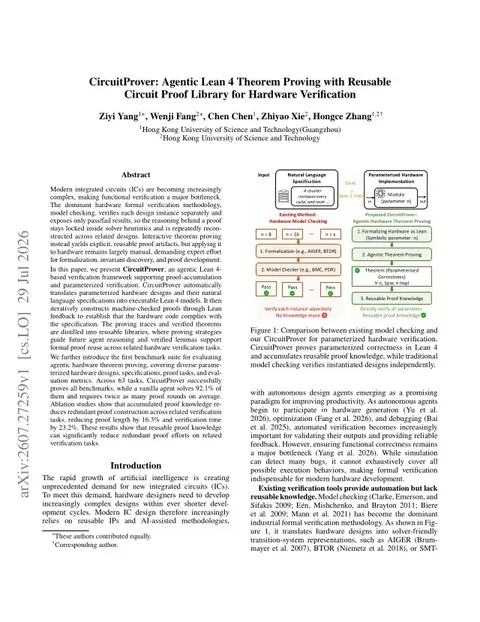

CircuitProver uses a Lean 4 agent to prove parameterized hardware designs correct
Ziyi Yang, Wenji Fang, Chen Chen, Zhiyao Xie, and Hongce Zhang present CircuitProver, an agentic Lean 4-based verification framework that translates hardware designs and natural language specifications into Lean 4 models and reuses verified lemmas across tasks. Across 63 tasks it proves all benchmarks, while a vanilla agent solves 92.1% of them.

Checked against: arXiv:2607.27259
Published in the week of Aug 6, 2026.